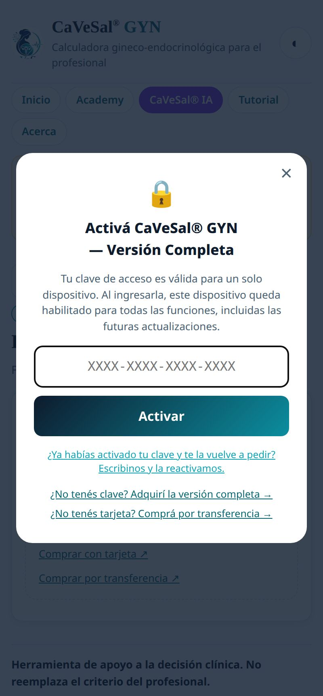
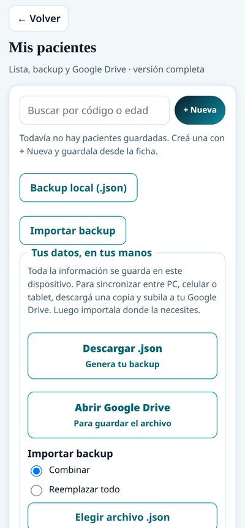
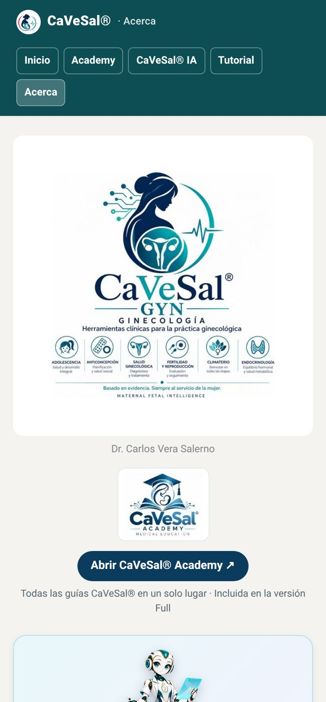

Before you start
What CaVeSal® GYN is and who it is for
What it is
CaVeSal® GYN is a gyneco-endocrinology calculator for health professionals. It brings together fertility, preconception work-up, climacteric, adolescence, contraception, gynecologic health and endocrinology.
The app interface is in Spanish; button and field names are shown as they appear, with their translation.
Each feature calculates its own result in the same block where you enter the data. There is no separate results tab: whatever you change is recalculated instantly.
When you open the app for the first time, the legal notice appears. Tick the box and tap Aceptar (Accept) to continue.

Demo and full version
Demo Open to try: the MRS scale, the ovulation day with the progesterone test window, the MHT Calculator with the SEGIRP 2026 algorithm, the POP-Q for prolapse and BMI. New BMI also shows the ideal weight: the weight range for a BMI between 20 and 25 for the height entered, and how many kilos to lose or gain to reach it.
Full version Adds trigger timing according to the induction scheme, the preconception hormone panel and every feature added later, at no extra cost.
In the Demo, a yellow notice appears at the top with the Activar versión completa (Activate full version) button. Locked features show the Versión completa (Full version) label and, when opened, a padlock with the purchase links.


Install and activate
Open cavesal.app/cavesal-gyn/ in your phone or computer browser.
Install it as an app with the Instalar app (Install app) button at the bottom right. On Android and on computers (Chrome or Edge) it opens the direct installation. On iPhone or iPad, from Safari, it shows the steps: Share button, Add to Home Screen and Add. It keeps the CaVeSal® GYN icon and opens offline.
Open it from the installed icon, tap Activar versión completa (Activate full version) and paste the key you received by email (it starts with GYN-). The full version is enabled permanently.
The key enables one device. If you changed devices or cleared your browser data, use the link to reactivate it.

How the app is organized
Search, tabs, record and buttons
Search, reason for visit, life stage and chapter
At the top is the Patient record. Below it, the search box: type a symptom, a condition or a test (bleeding, pain, fibroid, ectopic, mammography) and every related module appears.
The three tabs sort the same modules in three ways: Motivo de consulta (Reason for visit: Tumor, Pain, Bleeding and Discharge in large buttons, plus the other reasons), Etapa de vida (Life stage: adolescence, reproductive age, climacteric and menopause, postmenopause) and Capítulo (Chapter: general gynecology, endocrinology, fertility, contraception, infections, pelvic floor, climacteric, oncology, tests and imaging). A module appears in every place it belongs to. The number on each button shows how many modules it has.
Every feature calculates. In the Demo, the ones that are not open show a padlock and the Ver ejemplo (See example) button, which opens a fictitious case in read-only mode.
Top buttons
- Inicio (Home): goes back to the main screen.
- Academy: opens CaVeSal® Academy with the full guidelines. Included with the full version.
- Analizar con CaVeSal® IA (Analyze with CaVeSal® IA, violet button at the top), in the Demo and the full version: inside a screen it sends that screen to CaVeSal® IA; on the home screen it opens the IA without data. The professional IA is purchased separately: if you don't have an account yet, it shows you how to activate it when you arrive.
- CaVeSal® IA robot: below the tabs, with its message and the Analizar (Analyze) button. It sends the open screen; on the home screen it asks you to choose a screen. It also works in the Demo.
- Analizar con CaVeSal® IA at the bottom of each screen, in the Demo and the full version: it sends the data entered, the result and the management of that screen, plus the history from the open record. It also works with an example loaded (it arrives marked as a fictitious patient). Name and ID are not sent.
- When it opens, CaVeSal® IA shows «Enviado desde CaVeSal® GYN» (Sent from CaVeSal® GYN) and analyzes the case on its own: summary, interpretation of the result, suggested management and alerts. Then you can keep asking. Each arrival uses one analysis query from your daily quota. Requires a CaVeSal® IA account.
- Simulador (Simulator): fictitious clinical cases for training, free in the Demo.
- Tutorial: this manual.
- Acerca (About): authorship, ecosystem, clinical basis and legal notice.
- The round button in the corner switches between light and dark theme.
Features that already calculate
Each block shows its result and its sources
Fertility: ovulation, progesterone and trigger
CaVeSal® own algorithm · Based on: ASRM 2013 and 2020, ESHRE 2023 and 2025, MSPyBS 2025
Enter the cycle length in days: from the first day of one period to the first day of the next.
If you enter the date of the last menstrual period, the app also shows the ovulation date and the progesterone test date.
Full version Choose the induction scheme (clomiphene, letrozole or gonadotropins) and the lead follicle diameter in millimeters.
The app shows whether the follicle is within range for the trigger, below or above the recommended size.
Lead follicle ranges
- Clomiphene: 20 to 28 mm, with better rates between 23 and 28 mm.
- Letrozole: 19 to 23 mm, tolerated up to 28 mm.
- Gonadotropins: 16 to 18 mm, tolerated up to 20 mm.


Preconception: traffic light, folic acid and hormone panel Full version
Table adapted from MSPBS 2022, p. 23 · WHO · ACOG/SMFM 2022 · USPSTF 2023 · CDC · CaVeSal® own algorithm · Based on: ASRM 2020 · ATA 2017
Traffic light: enter age, weight, height, hemoglobin, pallor, syphilis and HIV, and tick the red and yellow criteria she has. The highest color wins. If a required item is missing, she is not classified as green. Each color shows the MSPBS management, and the ambiguities of the table (35 years, Hb between 11 and 12, BMI of 30) are explained.
Folic acid: dose according to the color and the high-dose indications (previous neural tube defect, diabetes, epilepsy, BMI of 30 or more), with when to start and stop. If you tick an MTHFR variant, it shows that neither the dose nor the type changes.
Hormone panel: all values are optional. FSH, LH, AMH, TSH and prolactin are measured on cycle days 2 to 5; progesterone on day 21. TSH is interpreted with anti-TPO, levothyroxine, IVF/ICSI and the laboratory's upper limit (4.0 if not reported).
Anti-Tg, autoimmunity and thrombophilia: anti-Tg adds information on thyroid autoimmunity; the levothyroxine decision is still based on anti-TPO. If you tick lupus, obstetric or thrombotic APS, antiphospholipid antibodies, previous thrombosis or thrombophilia, the preconception alerts are shown (ACR 2020, SMFM #64, ACOG PB 197) with a link to the guideline.

Infertile couple work-up Full version
CaVeSal® own algorithm · Based on: WHO 2025 · WHO 2021 · ASRM 2026 · AUA/ASRM 2024 · ESHRE 2023 · ASRM 2020 and 2021 · RCPI 2023
When to investigate: with age and months trying, it indicates whether to start the work-up (12 months, 6 at age 35 or more, immediately at 40 or more or with a known cause). Both partners are evaluated at the same time.
Male factor: enter the semen analysis; it is compared with the WHO 2021 limits and the finding is named (oligo, astheno, terato, azoospermia). If abnormal, it is repeated after 11 weeks or more and referred to urology. The total motile count after preparation guides IUI, IVF or ICSI with the scale from the HC guideline (Sugerencia CaVeSal®).
Ovulatory factor, reserve and uterus-tubes: cycles, luteal progesterone, FSH, prolactin, TSH and signs of PCOS guide the cause of anovulation. AFC and AMH classify the reserve (they are not a fertility test). Choose the tubal test (HSG, HyCoSy/HyFoSy, laparoscopy) and its result.
Next step: summarizes the couple's priority management, the missing tests and whether IUI or IVF is advisable according to prognosis.
↑ Back to contentsPCOS (SOMP): criteria, phenotype and HOMA-IR Full version
CaVeSal® own algorithm · Based on: International guideline 2023 (Teede) · Lancet 2026 · Matthews 1985 · ADA
Criteria: SOMP (Spanish acronym for polyendocrine metabolic ovarian syndrome, formerly PCOS) is confirmed with 2 of 3: ovulatory dysfunction, hyperandrogenism and ovarian morphology on ultrasound or AMH. In adolescents less than 8 years after menarche the first two are required; ultrasound and AMH are not used. It shows phenotype A to D and reminds you to exclude thyroid disease, prolactin and adrenal hyperplasia.
Metabolism: BMI, HOMA-IR (descriptive only, no universal cut-off), fasting glucose, OGTT and HbA1c with ADA cut-offs, and management according to the 2023 guideline.
↑ Back to contentsClimacteric: MRS scale Demo
Based on: Heinemann 2004 (Menopause Rating Scale)
Rate each of the 11 symptoms from 0 (none) to 4 (very severe). The total, from 0 to 44, updates at the top with its severity grade. Below you see the score of each subscale: somato-vegetative, psychological and urogenital.

Climacteric: MHT Calculator Demo Full version
CaVeSal® own algorithm · Based on: SEGIRP 2026 (Demo) · FIGO/WHF, EMAS, ACOG and ACP 2026 · NAMS 2022 · BGCS/BMS 2024 · EMA 2020-2022 · Endocrine Society 2019 · AACE 2020 · NOGG 2022 · BHOF 2022 (full version)
Choose the mode, the stage and the goal. In the combined algorithm, besides the classic contraindications, tick the oncologic history: each item shows whether systemic MHT is not recommended, is decided with oncology or is not contraindicated, according to histology and stage. Under Other conditions, coronary disease contraindicates MHT, gallbladder disease switches to the transdermal route and endometriosis without a uterus switches to continuous combined therapy.
With Osteoporosis prevention and high or very high fracture risk, the treatment appears: MHT as first line under age 60 or less than 10 years since menopause with symptoms, bisphosphonate with its drug holiday, denosumab (not stopped without switching to another antiresorptive), raloxifene, an anabolic agent at very high risk, and calcium with vitamin D. The T-score and risk from Densitometry are loaded automatically.
↑ Back to contentsBreast, cervix and endometrium Full version
CaVeSal® own algorithm · Based on: ACR BI-RADS v2025 · USPSTF 2024 · ASCCP 2019-2025 · ACOG CO 734 · IETA
Three independent blocks. BI-RADS: choose the category and it returns the management (for example, BI-RADS 0 under age 30 suggests breast ultrasound; 4 and 5, biopsy). Cervix: without results it gives the schedule by age; with cytology and HPV, the management. Endometrium: stage, thickness and bleeding, with optional IETA findings.
↑ Back to contentsAdnexal mass: O-RADS, IOTA and GI-RADS Full version
CaVeSal® own algorithm · Based on: ACR O-RADS US v2022 · IOTA · GI-RADS · ACOG PB 174 · RCOG GTG 62
First enter the patient's data (age, menopause, CA-125). Each system calculates its result and, if it is high risk, adds tumor markers, complementary imaging (contrast MRI or CT) and referral.
↑ Back to contentsUterus: MUSA adenomyosis and FIGO fibroids Full version
CaVeSal® own algorithm · Based on: MUSA 2022 · FIGO PALM-COEIN · STEP-W · ACOG PB 228
MUSA: tick the direct and indirect features; one direct feature confirms. Fibroids: choose the FIGO type; for submucosal ones the STEP-W score appears to plan hysteroscopy.
↑ Back to contentsEndometriosis: #Enzian, rASRM, EFI and management Full version
CaVeSal® own algorithm · Based on: ESHRE 2022 · IDEA 2016 · #Enzian 2021 · rASRM 1996 · EFI (Adamson 2010)
Tick the symptoms and ultrasound findings in 4 steps. Choose the #Enzian method (ultrasound, MRI or surgery) and fill in each compartment: it builds the final code. If there was surgery, complete rASRM and the EFI (it takes the lesion and the rASRM total). Under Management choose the goal: pain, pregnancy, both or an asymptomatic finding. The Copiar resumen (Copy summary) button copies the code, the stage and the EFI.
↑ Back to contentsUrinary incontinence Full version
CaVeSal® own algorithm · Based on: NICE NG123 · AUA/SUFU 2023 and 2024 · Stamey 1980 · Sandvik 1993 and 2000
Tick the symptoms: it defines stress, urge or mixed. For stress incontinence the Stamey grade appears; the Sandvik index measures severity. The 3-day bladder diary calculates frequency, nocturia, polyuria and nocturnal polyuria. Management goes from general measures to the pelvic floor, drugs with doses and surgery or third-line options. Warning signs indicate referral.
↑ Back to contentsOncology: FIGO staging Full version
CaVeSal® own algorithm · Based on: FIGO 2018 cervix · FIGO 2023 endometrium · FIGO 2014 ovary · ESGO
Enter the extent, size and lymph nodes. It returns the stage, the staging work-up, referral to gynecologic oncology and the general management, without doses. In endometrium, the molecular group can change stage I or II.
↑ Back to contentsPrecocious puberty Full version
CaVeSal® own algorithm · Based on: CaVeSal® guidelines · MSPyBS Paraguay (2025) · Carel 2009 · Latronico 2016 · Marshall and Tanner 1969 · Speiser 2018
Enter age, Tanner stages (breast and pubic hair), growth velocity, bone age, pelvic ultrasound (uterine length and volume, body/cervix ratio, endometrial line, ovarian volume and follicles) and the hormone profile (basal LH, GnRH-stimulated LH peak, estradiol, basal and post-ACTH 17-OHP, DHEA-S). It returns the probable type (central, peripheral adrenal or ovarian, isolated thelarche or idiopathic adrenarche), the assembled ultrasound report and the management: brain MRI and axis suppression with GnRH agonists in central puberty, or hydrocortisone in non-classic adrenal hyperplasia.
↑ Back to contentsDiabetes outside pregnancy Full version
CaVeSal® own algorithm · Based on: ADA, Standards of Care in Diabetes 2026 · WHO 2006 and 2011
Enter fasting glucose, 2-hour OGTT, HbA1c or random glucose with symptoms. It returns normoglycemia, prediabetes, diabetes range to confirm or diabetes, with the difference between ADA and WHO and the management (lifestyle, metformin when appropriate, pregnancy planning). It does not use pregnancy cut-offs.
↑ Back to contentsPatient record Demo
CaVeSal® own algorithm · Based on: CaVeSal® guidelines · US MEC 2024 · NCCN 2025 · WHO (BMI)
Enter only once the age, weight and height, the gyneco-obstetric history, smoking (cigarettes per day and years, with the pack-year index), the personal history with its MEC category (hypertension, diabetes, thrombosis, thrombophilia, ischemic heart disease, stroke, migraine, epilepsy, lupus, breast disease) and the family history (breast, ovarian, colon or endometrial cancer, BRCA, thrombosis, diabetes). It returns the risk-factor traffic light and which contraceptive methods she can use (category 1 to 4 and whether progestogen-only applies). The data are preloaded into the modules.
In the Demo you can tick items and see the traffic light. Saving the patient with her code, opening it later, and exporting and importing it as JSON are part of the full version. With the full version, when you leave a module the visit is saved to the record and when you come back the Restaurar (Restore) button appears. The data stay only on this device, without name or ID.
↑ Back to contentsAbnormal uterine bleeding: PALM-COEIN Full version
CaVeSal® own algorithm · Based on: CaVeSal® guidelines · FIGO 2018 · ACOG CO 557, PB 128, CO 785 and CO 734
Enter cycle frequency, duration and variation, volume, intermenstrual or postcoital bleeding, β-hCG, hemoglobin, coagulopathy screening, the factors for biopsy and the PALM-COEIN cause. It returns the FIGO pattern, whether to investigate coagulopathy or biopsy the endometrium, and the management by cause, including acute heavy bleeding.
↑ Back to contentsPrimary and secondary amenorrhea Full version
CaVeSal® own algorithm · Based on: CaVeSal® guidelines · ASRM 2008 · ESHRE POI 2016/2024 · Endocrine Society 2017
It follows the algorithm: definition, β-hCG, TSH and prolactin, FSH, progestogen challenge and estrogen-progestogen test; in primary amenorrhea, breast development, uterus and karyotype. It returns the probable cause (PCOS, hypothalamic amenorrhea, POI, hyperprolactinemia, Asherman, Turner, MRKH, androgen insensitivity, obstruction) and the management.
↑ Back to contentsPelvic inflammatory disease Full version
CaVeSal® own algorithm · Based on: CaVeSal® guidelines · CDC 2021
Enter the minimum, additional and specific criteria and the admission criteria. It returns the diagnosis, outpatient or inpatient care, the antibiotic regimen, management of tubo-ovarian abscess and IUD, the partner and the 72-hour follow-up.
↑ Back to contentsAcute and chronic pelvic pain Full version
CaVeSal® own algorithm · Based on: CaVeSal® guidelines · ACOG PB 193, CO 783 and PB 218 · NICE NG126 · CDC 2021 · RCOG GTG 41 · Rome IV · AUA 2022
Acute: stability, β-hCG and ultrasound; if positive, intrauterine pregnancy, ectopic (methotrexate or surgery) or pregnancy of unknown location with β-hCG at 48 hours; if negative, torsion, PID, abscess, ruptured cyst, appendicitis and urinary causes. Chronic: 6 months or more, red flags, probable causes (endometriosis, adenomyosis, pelvic congestion, adhesions, painful bladder, irritable bowel, myofascial, neuropathic, psychosocial), tests and management.
↑ Back to contentsLaboratory by condition Full version
CaVeSal® own algorithm · Based on: CaVeSal® guidelines · WHO 2024 · ADA · ATA 2017 · ASRM 2020/2026 · ESHRE (POI 2024, RPL 2022) · PCOS 2023 · Endocrine Society · NICE NG23 · ACOG PB 197 · ACR 2020 · CDC 2021
Choose the condition: routine and preconception, bleeding, cycle and fertility (day 2 to 3, AMH, day-21 progesterone), hyperandrogenism and metabolic, climacteric, puberty, immunologic profile (antiphospholipids, inherited thrombophilia, lupus and recurrent miscarriage) or vaginal and endocervical discharge. It shows what to order, what not to order routinely, the interpretation of each result and the management.
↑ Back to contentsGynecologic ultrasound: reserve, polycystic ovary, tubes and cavity Full version
CaVeSal® own algorithm · Based on: ESHRE Bologna 2011 · ASRM 2020 · PCOS 2023 · ASRM 2021 · FOAM 2022 · AAGL · ASRM 2016
Choose what to evaluate. Reserve: AFC and AMH with Bologna and hyper-response cut-offs. Polycystic ovary: follicles per ovary (8 MHz) or volume. Tubes: HSG or HyFoSy result per side and cavity, with management (IVF, salpingectomy for hydrosalpinx, hysteroscopy). Hysteroscopy: finding and management.
↑ Back to contentsBone densitometry Full version
CaVeSal® own algorithm · Based on: WHO 1994 · ISCD 2023 · BHOF 2022 · AACE 2020 · Endocrine Society 2019/2020 · USPSTF 2025
Enter the T-scores (negative values with a comma are accepted) or the Z-score in premenopause, fractures and FRAX. It returns the classification, whether treatment is indicated, very high risk and follow-up.
Values are copied from the report: the app does not read the PDF or photo. Per ISCD, the diagnosis is set by the lowest T-score among spine, femoral neck and total hip, and the app shows which region it is. When treatment is indicated it suggests alendronate, risedronate or zoledronic acid (they reduce vertebral, nonvertebral and hip fractures); ibandronate has only been shown to reduce vertebral fractures, so with hip risk the plan says not to use it. It also classifies each region separately, warns when spine and hip differ by more than 1 SD (possible osteoarthritis or calcification raising the spine) and, in postmenopause, with a Z-score of −2.0 or lower suggests looking for a secondary cause.
↑ Back to contentsOvulation induction Full version
CaVeSal® own algorithm · Based on: ASRM 2022 · ASRM 2020 · ASRM 2024 · PCOS 2023 · thresholds from the Fertility module
Choose the drug and type the follicles of each ovary separated by commas (for example 18, 14, 11). It returns whether to give hCG, whether to cancel because of multiple pregnancy or hyperstimulation risk, the date of the next ultrasound, the endometrium and the check 48 to 72 h after hCG.
↑ Back to contentsOvarian hyperstimulation syndrome Full version
CaVeSal® own algorithm · Based on: RCOG GTG 5 · ASRM 2024
Tick risk factors, symptoms and laboratory results. It returns the severity, the management (outpatient or admission) and the warning signs.
↑ Back to contentsContraception: eligibility and methods Suggestion in the full version
CaVeSal® own algorithm · Based on: US MEC 2024 (with appendices E, F, I and J) · WHO 2025 and 2026 · FSRH 2023 · FDA labels for Mounjaro (08/2026) and Ozempic (05/2026) · WHO 2018 · Trussell 2011
A single module in 3 steps. At the top, the category block 1 to 4 and the (i) Leyenda (Legend) button with the three readings, I/C, A/C/D and A/C/D/S.
Step 1: age, current method and initiation or continuation. Step 2: tap each condition or its variant; the search box filters them and the ticked ones stay at the top, with × to remove them. It includes barrier, natural, emergency methods and incretins. Step 3: the Sugerencia CaVeSal® (CaVeSal® Suggestion) and the methods by family (IUD, progestogen-only, combined, lactation, barrier, emergency, sterilization and natural), with filters. Tap a method to see its card: Pearl index, duration, composition, why it has that category and, for combined methods, the regimens (sequential, fixed extended, flexible and continuous).
↑ Back to contentsHereditary cancer: BRCA and Lynch syndrome Full version
CaVeSal® own algorithm · Based on: NCCN · ACOG PB 182 and 147 · Amsterdam II · MSPBS 2025
Tick the personal and family history. It returns the criteria met, referral with a multigene panel and, if she already carries the variant, follow-up and risk-reducing surgery.
↑ Back to contentsMy patients and Google Drive backup Full version
Pacientes (Patients) tab: list of saved records with search, Abrir (Open, loads the record and its visits) and Borrar (Delete). Backup local (Local backup) downloads a .json with all patients; Abrir Google Drive (Open Google Drive) takes you to your Drive to upload it. On another device, Elegir archivo .json (Choose .json file) imports it: Combinar (Merge) adds the patients and keeps the most recent version of each; Reemplazar todo (Replace all) keeps only those in the file. It also accepts the .json of a single patient exported from the record.

Data from the Clinical Record Full version
In the CaVeSal® Clinical Record, the Enviar a GYN (Send to GYN) button opens this app with the patient's structured clinical data, without name or ID. Each module preloads what applies and shows the notice "Datos recibidos de la HC CaVeSal®" (Data received from the CaVeSal® Clinical Record), with what still has to be completed by hand.
Modules that receive data: MRS scale, MEC eligibility, contraceptive methods, choosing the progestogen, emergency contraception, MHT Calculator, incretins, preconception traffic light, BMI, incontinence (bladder diary), fertility, PCOS, couple, endometriosis, adnexal mass, tests, densitometry, abnormal uterine bleeding and the patient record.
The record is only preloaded if it is empty; from there it is assigned a code and saved in My patients. Everything remains editable and the "Descartar datos de la HC" (Discard Clinical Record data) button deletes what was received.
↑ Back to contentsChoosing the progestogen Full version
CaVeSal® own algorithm · Based on: BMS 2026 · EMA 2013 and 2014 · ESTHER/E3N · Schindler 2008 · Regidor 2018 · LIBERATE · LIFT
Choose the use (MHT or oral contraception) and tick the characteristics. It suggests the progestogen, what to avoid and the cyclic or continuous regimen. Libido, sleep and breast risk are guidance only and do not change the suggestion. It includes the pharmacologic profile by group, VTE risk and MHT doses with tibolone.

Emergency contraception Full version
CaVeSal® own algorithm · Based on: WHO 2021 · FIGO/ICEC · FSRH 2017 · Cochrane 2019
Enter the hours since intercourse, BMI or weight and the situation. It ranks the options by efficacy (copper IUD, ulipristal, mifepristone, levonorgestrel and Yuzpe), adjusts the levonorgestrel dose and calculates the Yuzpe pills according to the contraceptive available. It shows the mechanism of each one.

Tumor markers Full version
CaVeSal® own algorithm · Based on: CaVeSal® guidelines · ESMO 2018 · ESGO-ESMO-ESP 2024 · RCOG GTG 62 · ACOG PB 174 · Moore 2009
Enter CA-125, HE4 (it calculates ROMA), CEA, CA 19-9 and the germ cell and sex cord markers. It returns the probable origin, false positives, what to order according to age and when to refer to gynecologic oncology.
↑ Back to contentsExamples and Simulator
To see what each module does and to train
Example cases
Each module has one or more example cases. In the full version, the Cargar ejemplo (Load example) button fills in the fields and shows the result. In the Demo, locked modules show the example case with its full result in read-only mode, so you can see what the full version does before buying it.
GYN Simulator
The Simulador (Simulator) button opens fictitious clinical cases by area (adolescence, contraception, fertility, endocrinology, infections, pelvic floor, climacteric and oncology). Each answer shows its rationale and the link to the bibliography. It is also free in the Demo.
↑ Back to contentsAcademy, IA and About
The rest of the CaVeSal® ecosystem
Academy and IA
CaVeSal® Academy brings together the full clinical guidelines of all the apps, including gynecology, endocrinology and fertility. It is included with the full version: when you tap Academy in the app, it opens with your access.
CaVeSal® IA is the professional artificial intelligence. It is purchased separately. From GYN (Demo or full version) you send it the case from any screen and it analyzes it on its own when it opens. It also searches the GYN cards and the related Clinical Record guidelines.
About
It shows the app ecosystem (this one in full version and the others in Demo), the QR code to invite your patients to CaVeSal® Mamá and CaVeSal® Mujer, the tutorials, the clinical authorship, the clinical basis with its bibliography and the legal notice.

Legal notice and contact
CaVeSal® GYN is a clinical decision-support tool intended exclusively for health professionals. It does not diagnose or replace clinical judgment. The mention of ASRM, ESHRE, ATA, WHO, FIGO and other institutions is for bibliographic attribution; none of them sponsors, endorses or certifies CaVeSal®.
The software, design, texts and logic are protected by Law No. 1328/1998 of Paraguay and the Berne Convention.
Contact: drverasalerno@gmail.com
Updated: November 2026 · © 2026 CaVeSal® · Dr. Carlos Vera Salerno